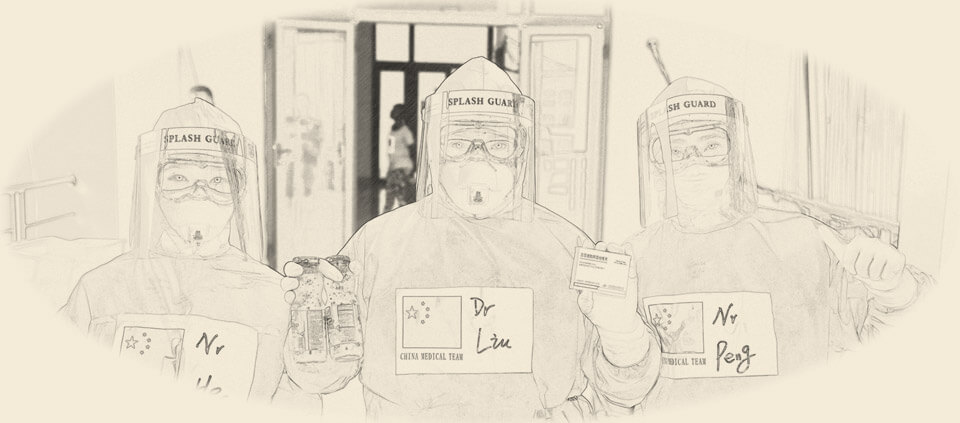
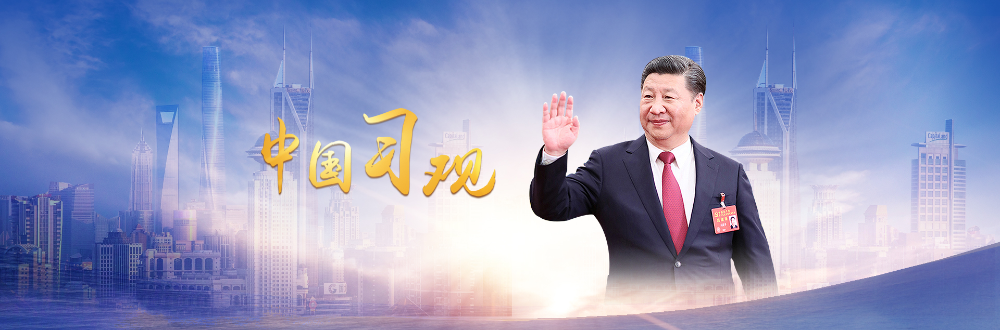

《Endeavor China》
1921-2021 The vicissitudes of the century, The Times change. So much has changed in the last 100 years. From poor and weak to rich and strong, from being bullied to standing in the East, from standing up, rich to strong...... The centenary is in its prime, and the future still needs trials and hardships. What remains unchanged is our courage to defy the odds, our unity of purpose, and our unswerving faith. Striving people, advancing China!
Big bear
Fight Ebola
In 2014, the biggest Ebola epidemic in 40 years broke out in West Africa, and many lives were lost. At the critical moment, China lent a helping hand and set up a medical team to fight Ebola in Africa, demonstrating China's international responsibility and responsibility as a major country with concrete actions. By Wang Jinqiu, jian-guo hong co-authored 390000 words long reportage "big bear" the local players "risked their lives to save out of text", faithfully reflect the local medical team face to face with death, hardworking, always adhere to the zero distance observation treatment, "not afraid of hard, dedicated, and to heal the wounded and rescue the dying, big boundless love" of the spirit, It shows the good image of China and the Chinese military to the world, showing China's speed, Chinese standards, Chinese technology and Chinese spirit.
Qin Yuling, a member of the first medical team for Aid to Ethiopia, entrusted her sick mother to her sister to take care of her after receiving the order to go out. On the third day, she arrived in Africa to fight against Ebola. Facing the critically ill ebola patient spitting blood in her mouth and the Ebola virus with a fatality rate of up to 90%, she bravely entered the sick area to clean up the pollution source regardless of her own safety. Huang Shun, a member of the second medical team in Sierra Leone, and her female teammates treated Nine-year-old Ebola orphan Yayuma, who was admitted to the Friendship Hospital of China and Sierra Leone twice. They gave her the motherly love of "Chinese mother" and took care of her with great care, helping her finally overcome the terrible Ebola. Li Lei, a member of the third group of medical teams in Sierra Leone, showed and explained the protective clothing used in the fight against Ebola, and told the story of the medical team's treatment of the oldest Ebola patient, Musu, who was critically ill in hospital due to Ebola. After the medical team's all-out treatment, she recovered miraculously. In the battlefield without smoke, in the foreign country far from home, the Chinese medical team has created one life miracle after another with great responsibility, sacrifice and dedication.
A Common Dream -- The Belt and Road Initiative
During his visits to Kazakhstan and Indonesia, Chinese President Xi Jinping put forward the initiative of jointly building a Silk Road Economic Belt and a 21st Century Maritime Silk Road. All the way to build "area", follow the discuss sharing principle, uphold the peaceful cooperation, open inclusive, learn each other mutual learning, mutual benefit and win-win spirit of the silk road, by policy unicom communication, facilities, open trade, financing, and same as the key point, has opened up a new space, the world economy has set up a platform of international trade and invest in new, expanded the new global economic governance practices, It has made new contributions to improving the people's well-being of all countries and contributed China's proposal to building a community with a shared future for mankind.
China's response to COVID-19 demonstrates its sense of responsibility as a major country
In his speech at the general debate of the 75th SESSION of the United Nations General Assembly, President Xi Jinping pointed out that "major countries should look bigger, provide more global public goods, shoulder their responsibilities and show their responsibility as major countries." At present, mankind is still struggling with the COVID-19 pandemic. To defeat the virus and tackle the crisis, we call for solidarity and coordination and a sense of responsibility from major countries. China has joined hands with other countries in the fight against COVID-19, and taken concrete actions to fulfill its responsibilities for global public health. This demonstrates China's sense of responsibility as a major country that respects good faith, values friendship, uphold justice, and adheres to moral principles.
As a member of the international community, China is committed to fulfilling its obligations and commitments within the framework of international rules and order. In combating the outbreak in China in the first place to the world health organization (who), the relevant countries and regional organizations reporting information, the first release will be coronavirus gene sequence information, such as diagnosis and treatment and the prevention and control plan unveiled the first time, with all parties to share the control and prevention and the treatment experience, after the success of the first to make the future vaccine development will serve as the promise of global public goods, to benefit the world, Support for global cooperation on epidemic prevention. China is sincere and open, adheres to its obligations and honors its commitments. Its acts of good faith have won wide appreciation from the international community.
China believes that all countries should work together for shared prosperity. We should not only deliver a good life to ourselves, but also to others. In particular, we hope that developing countries will accelerate development. Many developing countries have lent their full support to China during its difficult time. China has also actively helped some developing countries with weak public health systems strengthen their defense against the epidemic, and called on the international community to provide more material, technical and human support to developing countries, especially African countries. Within two years and promised to countries affected by the epidemic, especially in the developing countries to provide $2 billion aid, to establish hospital 30 African counterpart cooperation mechanism, speed up the construction headquarters of the centers for disease control and prevention in Africa, efforts to achieve accessibility and in developing countries to take sex, with the g20 members to carry out the "deferred the poorest countries debt payments initiative, such as a number of major initiatives. Sharing weal and woe, China's friendship with other developing countries brings warmth and strength to all.
Major-country diplomacy -- a new type of international relations
Report of the 19th National Congress of the Communist Party of China:
First, the report of the 19th CPC National Congress has defined international relations in a new way. Promoting a new type of international relations featuring mutual respect, fairness, justice and win-win cooperation.。
Second, he made a dichotomous scientific judgment on the international situation. While acknowledging the irreversible trend of peaceful development, it also pointed out the common challenges facing mankind. The world we live in is full of both hope and challenges. We can't give up on our dreams because the reality is complicated, and we can't give up on our dreams because they are far away. No country can meet the challenges facing humanity alone, and no country can retreat into isolation.
Third, we should propose a strategy for building a community with a shared future for mankind. The dream of the Chinese people is closely connected with the dream of the people of other countries. To realize the Chinese dream, we cannot do without a peaceful international environment and a stable international order. China is very responsible in safeguarding the international order. This is China's basic position and choice. We must bear in mind both our domestic and international interests, unswervingly follow the path of peaceful development, pursue a win-win strategy of opening-up, uphold the right approach to justice and shared interests, and foster a new concept of common, comprehensive, cooperative and sustainable security. The report also proposes to establish a correct view of civilization and ecology.
China is a builder of world peace, a contributor to global development and a defender of the international order.
Fourth, reaffirm China's independent foreign policy of peace and give it new meaning. This new connotation covers at least two aspects. First, it puts special emphasis on upholding international fairness and justice, including the new type of international relations. China's development poses no threat to anyone. No matter how developed It may become, China will never seek hegemony or expand. This is a solemn commitment that has given new meaning to China's independent foreign policy of peace.
Fifth, China needs to develop global partnerships. China will promote the building of a new model of major-country relations, uphold the right approach to justice and shared interests, and promote partnerships with other developing countries. By making a community of shared future for mankind take root in our neighborhood, we can build friendship and partnership with our neighbors.
Sixth, China needs to pursue development with its door open. We need to advance the Belt and Road Initiative in all respects, build a new platform for international cooperation, and build an open world economy. There are some counter-currents in the international community. Anti-globalization and even so-called isolationism are not desirable. We will continue to open up and develop.